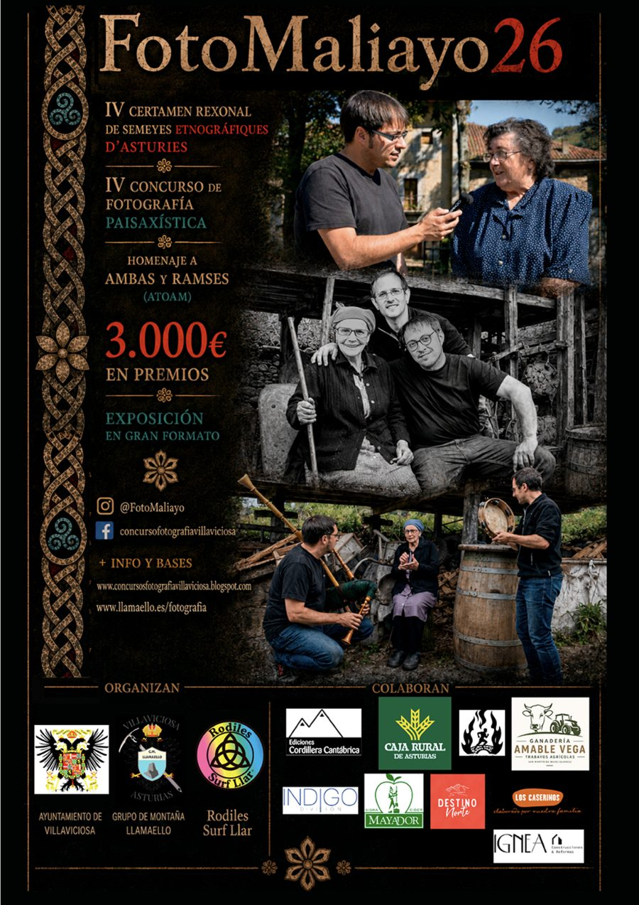

Concurso de fotografía de Villaviciosa
- Certamen rexonal de semeyes etnográfiques d'Asturies
- Concurso de fotografía paisajística de Villaviciosa
Desde 2023, FotoMaliayo invita a recorrer Asturias con la cámara para poner en valor su paisaje y su paisanaje: los usos y tradiciones de nuestros pueblos y la naturaleza que los rodea.

Edición 2026
Inscripción abierta hasta el Inscríbete y envía tus fotografías
El plazo de inscripción está cerrado Entrega de premios: sábado 17 de octubre, en el Teatro Riera de Villaviciosa .
3.000 € en premios y exposición de las obras seleccionadas en gran formato por el casco antiguo de Villaviciosa.
- 1 de octubre Último día para enviar fotografías, hasta las 23:59.
- Tras el fallo Los seleccionados tienen 2 días para enviar el archivo a máxima resolución.
- 17 de octubre Entrega de premios en el Teatro Riera de Villaviciosa.
Semeyes etnográfiques
Fotografías que muestren los usos, costumbres y oficios tradicionales de Asturias. El jurado valora tanto la calidad técnica como el valor documental. Cada edición incluye además una categoría especial.
Fotografía paisajística
Montaña, deportes en el medio natural, la mar y la costa asturiana, y accésits como Villaviciosa o Carreres por montaña. El paisaje predominantemente natural es el protagonista.